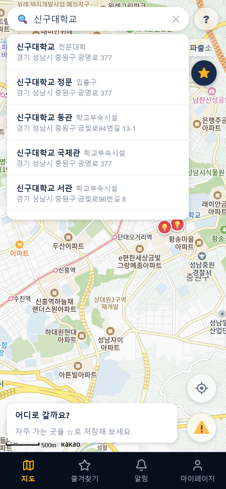
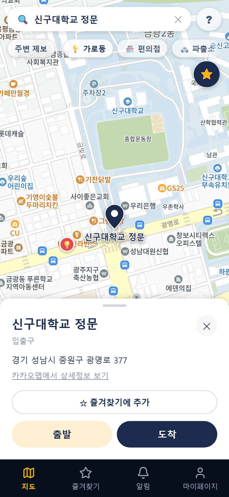

3년간 웹과 앱 서비스를 직접 만들며 서버, 데이터베이스, 화면을 다뤄 왔습니다.
이제는 이 개발 경험을 살려 IT 기술영업에 도전하려고 합니다.
지원 직무와 관련된 경험
문서 작성
AI 코딩 도구로 개발한 수업 프로젝트에서, 기술을 고를 때마다 대안을 비교한 문서를 남기고 최종 선택을 했습니다(3건). 기획서, 작업 일정표(WBS), 리스크 관리표로 일정과 위험 요소를 관리했습니다. 4쪽
사용자 불편 분석
레시피 추천 앱의 13개 화면을 휴리스틱 기준으로 평가해 문제점과 개선안을 정리했고, 우선순위 1~8번을 직접 고쳤습니다. 3쪽
팀 협업
3인 팀 프로젝트를 두 번 했습니다. 기능별로 역할을 나누고, 일정표와 중간 점검일을 정해 진행했습니다. 2쪽
프로젝트
이름
내용
기간
인원
도와줘, 맵! (졸업작품)
밤길에 덜 위험한 경로를 안내하는 웹 지도 서비스
2026.09 ~ 11
3명
냉장고 요리사
냉장고 사진으로 재료를 인식해 레시피를 추천하는 앱
2026.05 ~ 10
3명, 이후 개인 개선
Delay Detective
미루는 일의 이유를 묻고 작게 나눠 주는 할 일 앱
2026.05 ~ 06
개인 (수업 과제)
사용해 본 기술
사용해 본 기술
Spring Boot, MySQL, Oracle, Firebase, WebSocket, React, Flutter, AI API 연동
1
프로젝트 1
도와줘, 맵!
졸업작품 · 3인 팀 · 2026.09 ~ 11 · React, Spring Boot, MySQL
어떤 서비스인가
길찾기 서비스는 보통 가장 빠른 길을 알려줍니다. 하지만 밤에는 빠른 길이 어둡거나 인적이 드문 경우가 있어서,
가로등 데이터와 사용자 위험 제보를 반영해 덜 위험한 경로(안심경로)를 최단경로와 같이 보여주는 서비스를 만들었습니다.
제가 맡은 부분
팀에서 지도와 경로 탐색을 맡았습니다.
OpenStreetMap 도로 데이터(교차로 약 3,630개, 도로 약 5,890개)와 성남시 보안등 공공데이터를 가공해 시연 지역 지도 데이터를 만들었습니다.
경로를 계산하는 서버 기능과, 그 결과를 지도에 그리는 화면을 둘 다 만들었습니다.
누군가 경로 근처(50m 이내)에 위험 제보를 올리면 경로를 다시 계산해 안내하도록 했습니다.

① 목적지 검색

② 출발·도착 지정③ 전체 경로④ 안심·최단 비교
개발하면서 겪은 문제와 해결
문제
원인
해결
학교 쪽으로 가는 경로가 남쪽 교차로까지 크게 돌아서 나왔습니다. 카카오맵에서는 바로 건너가는 길이었습니다.
공개 지도 데이터(OpenStreetMap)에서 학교 안 도로와 큰길이 끊겨 있었습니다.
횡단보도 건너편 15m 안에 끊긴 길이 있으면 이어 주도록 했습니다. 경로가 600m에서 466m로 줄었습니다.
보도에 올라온 위험 제보 1건 때문에 15m 옆 학교 도로 120m 전체가 위험 구간이 되어, 안심경로가 돌아갔습니다.
제보 위치에서 25m 안에 있는 모든 길에 위험도를 반영하고 있었습니다.
제보 위치에서 가장 가까운 길에만 반영하도록 바꿨습니다.
안심경로가 최단경로보다 거리가 더 짧게 표시되는 경우가 있었습니다.
최단경로를 거리 그대로가 아니라 도로 종류별 가중치를 곱한 값으로 계산하고 있었습니다.
안심경로가 최단경로 기준으로도 더 나으면 최단경로도 그 길로 안내하도록 했습니다.
팀 진행 방식
프론트엔드, 백엔드로 나누지 않고 기능별(지도·경로 / 제보 / 마이페이지)로 나눠서, 각자 맡은 기능을 화면부터 저장까지 끝까지 만들었습니다.
날짜별 담당 일정표를 만들고, 중간 점검일에 모여서 진행 상황을 보고 범위를 조정했습니다.
기능별 브랜치에서 작업하고 Pull Request로 변경 내용을 공유한 뒤 합쳤습니다.
2
프로젝트 2
냉장고 요리사
3인 팀으로 개발(2026.05 ~ 06) 후 개인 저장소에서 개선(2026.06 ~ 10) · Flutter, Spring Boot, Oracle
개선 과정
다른 과목에서 기존 앱의 개선점을 찾아 직접 개선하는 과제가 있어서, 팀 프로젝트로 만들었던 이 앱을 대상으로 정했습니다.
닐슨의 사용성 평가 기준(휴리스틱)으로 13개 화면을 하나씩 평가하고, 화면마다 문제점과 개선 방안을 PPT로 정리했습니다. 그중 우선순위가 높은 1~8번을 직접 고쳤습니다.
개선 전과 후
개선 전개선 후
문제 분석이 얼마나 걸리는지 표시가 없어서 기다리는 동안 멈춘 건지 알 수 없었습니다.
수정 상단에 4단계 진행 표시를 넣고, 분석 중에는 업로드 진행률과 경과 시간, 취소 버튼을 보여주도록 했습니다. 다른 탭에 갔다 와도 분석 상태가 유지됩니다.
개선 전개선 후
문제 알레르기를 쉼표로 직접 입력하는 방식이라 오타가 나면 필터링이 안 될 수 있었습니다.
수정 목록에서 고르는 방식으로 바꾸고, 목록에 없는 재료만 따로 입력하게 했습니다. 선택한 재료는 추천 레시피에서 빠집니다.
개선 전개선 후
문제 레시피에 필요한 재료 중 무엇이 냉장고에 있는지 알 수 없고, 장바구니에 담으려면 직접 다시 입력해야 했습니다.
수정 재료마다 보유·부족을 표시하고, 부족한 재료를 버튼 하나로 장바구니에 담을 수 있게 했습니다.
그 밖에 고친 것
오류 메시지에 원인과 해결 방법을 같이 적었습니다.
알림 권한을 앱을 처음 켤 때가 아니라, 유통기한을 처음 등록할 때 이유와 함께 요청하도록 바꿨습니다.
회원가입할 때 입력값을 바로바로 확인해 주고, 가입하면 자동으로 로그인되게 했습니다.
냉장고 목록에 정렬 기능과 유통기한 임박 배지를 넣었습니다.
하지 않은 것
레시피 랭킹 기능도 생각했지만, 지금 구조에서는 레시피를 사용자마다 따로 만들어 저장하기 때문에 랭킹을 매길 수가 없었습니다.
데이터 구조를 먼저 바꿔야 한다는 점을 개선안 문서에 같이 적어 두었습니다.
3
프로젝트 3
Delay Detective
수업 과제 · 개인 · 2026.05 ~ 06 (6주) · Flutter, Firebase · AI 코딩 도구 활용
AI 코딩 도구를 활용해 앱을 개발하는 수업 과제로 만든 프로젝트입니다. 코드와 문서 초안은 AI가 만들었고,
저는 AI에게 작업을 나눠 지시하고, 결과물을 검토해 어떤 기술을 쓸지 결정하고, 앱을 직접 실행·테스트하며 고칠 부분을 찾았습니다.
나중에 왜 이렇게 만들었는지 설명할 수 있도록, 기술을 고를 때마다 비교한 내용을 문서로 남겼습니다.
홈 화면미루는 이유를 묻는 인터뷰분석 결과와 작게 나눈 할 일
예시: 데이터 저장 방식을 고른 문서
조건은 세 가지였습니다. 인터넷이 없어도 쓸 수 있어야 하고, 여러 기기에서 같은 데이터를 볼 수 있어야 하고, 6주 안에 끝내야 했습니다.
방법
장점
단점
결과
A. Firebase + 기기 내 저장
인터넷 없이도 동작, 서버를 따로 운영할 필요 없음, 무료 범위로 충분
동기화 기능을 직접 만들어야 함
선택
B. Supabase
SQL 사용 가능, 실시간 기능
오프라인용 저장소를 따로 붙여야 함, 국내 자료가 적음
제외
C. 서버 직접 구축
원하는 대로 만들 수 있음
서버 개발과 운영까지 하면 6주 안에 어려움
제외
D. 기기 내 저장만 사용
가장 간단함
기기를 바꾸면 데이터가 사라지고, 여러 기기 사용 불가
제외
A를 골랐고, 단점이었던 동기화 문제는 리스크 관리표에 따로 올려서 관리했습니다.
리스크 관리표 (일부)
리스크
가능성
영향
대응
중간 발표 전에 화면을 다 못 만듦
높음
높음
꼭 필요한 기능 6개를 먼저 끝내고, 나머지는 다음 주로 미룸
기기끼리 데이터가 충돌함
중간
중간
나중에 수정한 내용을 기준으로 맞추고, 수정 시각이 같을 때만 사용자에게 물어봄
AI 응답이 느리거나 비용이 많이 나옴
중간
높음
개발할 때는 가짜 응답을 쓰고, 호출 횟수에 제한을 둠
이 프로젝트에서 남긴 문서
기획서(PRD), 작업 일정표(WBS), 기술 비교 문서 3건, 리스크 관리표, 배포·테스트 안내 문서